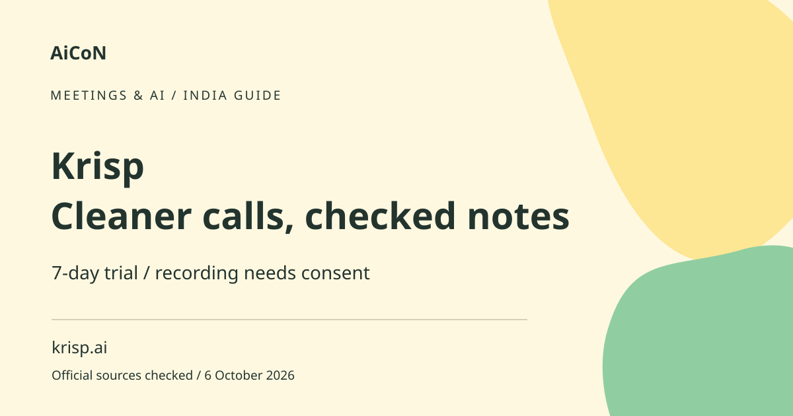

Krisp: noise cancellation, notes and trial limits
Krisp combines audio features with meeting transcription and notes. Its current pricing page offers a seven-day free trial without a card. That is a trial, not a permanent unlimited free plan.

Audio cleanup and notes are different
Noise cancellation attempts to reduce distracting sound. Transcription turns speech into text. AI notes condense that text into summaries and action items. Good audio can improve clarity but cannot guarantee a correct transcript. A generated action item can assign the wrong person or invent a deadline if you do not review it.
How to use it, step by step
- Open krisp.ai/pricing and check the trial and plan that fit your device and use. Confirm platform compatibility before installing.
- Read the signup permissions. The current FAQ says calendar connection is part of the default process, with a separate alternative discussed through sales.
- Test audio in a low-risk call and verify what microphone and output settings your meeting app is using.
- Before recording or transcribing a real meeting, get everyone's appropriate consent and follow workplace or institutional rules.
- Explain what will be recorded or processed and where resulting notes will be kept. Bot-free does not mean no recording.
- Review the transcript, summary and action items against the actual discussion. Correct names, amounts, responsibilities and deadlines.
- Before sharing notes, check the audience and remove unrelated sensitive information. A meeting participant is not automatically entitled to every private detail in the recording.
- At trial end, review the plan and billing terms before paying. Record the renewal date and cancel through the actual billing route if you do not want the subscription.
What the free trial means
The pricing page describes seven days at ₹0 without a credit card and lists transcription, noise cancellation, recording and AI notes within that trial. Do not assume the same allowances continue indefinitely. A trial is useful for testing your own equipment and workflow. It is not proof that your organisation permits its use.
Paid Core and price ambiguity
Core lists a bot-free note taker, online and in-person meeting notes, an outbound call recorder and mobile features. The fetched page showed ~₹1,543 (US$16) and ~₹771 (US$8) per user monthly figures, using a rough ~₹96.43/USD conversion from the 6 October report linked below, not India checkout quotes, without enough billing labels to establish one universal price. Check the active monthly/yearly selection and final INR total before subscribing. Other plans and business products can have different capabilities.
Accent conversion is separate
The current Core listing includes an allowance for accent conversion and names several speaker-side accents, including Indian accents. That is not a claim that every Indian voice or local language works equally well. Accent conversion changes audio presentation, while transcription and translation are different tasks. Test it with consent and avoid changing someone's voice representation without their understanding.
Privacy and bot-free meetings
A product can capture or process audio without a visible bot participant. The absence of a bot is not evidence that nothing is stored. Review retention, sharing, calendar access and account controls. Use only an approved workflow for confidential calls, interviews or health information. Participants should understand processing before the meeting starts.
Review notes before they become commitments
An AI summary is a draft. Check decisions and whether a suggestion was actually accepted. Names can be confused when several people speak. Do not send a summary saying someone owns a task if the recording only shows them discussing it. Keep corrections visible so the meeting record does not silently misrepresent the conversation.
India and Kerala practical use
Test your real microphones, network conditions and mixed-language meetings before relying on the service. Language availability and transcript quality are different facts. Check Malayalam passages with a fluent speaker when needed. A paid plan cannot compensate for an unclear source recording or establish consent that was never obtained.
Frequently asked questions
Is it permanently free?
The current page offers a seven-day trial, not a permanent unlimited free plan.
Does bot-free mean no consent needed?
No. Recording and processing still require appropriate consent and rules.
Are AI action items final decisions?
No. Review them against what participants actually agreed.
Which Core dollar price applies?
The fetched labels were insufficient; confirm the billing selection and checkout.
Official sources
Checked 6 October 2026. Expanded from an AiCoN short post delivered 5 October 2026. Portal screens and rules can change.